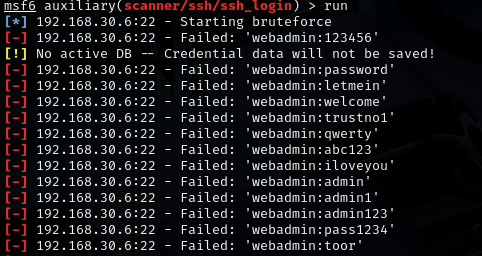

5. Exploitation
You've done the recon. You've scanned for weaknesses. Now comes the exciting part: trying to actually use those weaknesses to gain access.
This stage is called Exploitation. You use real tools and methods to test whether the vulnerabilities you found can be exploited — in other words, can you break into the system? Let's see how the attack might unfold!
In this simulation, you'll be using a series of tools and techniques to exploit the vulnerabilities you found in the previous steps. Let's take a look at the some interesting stuff you found with nmap -sV --script vuln command. I'm talking about THIS:
Under http-enum we have a bunch of interesting paths.See what happens when you connect them as an extension of the IP address!
http://192.168.30.6/wp-login.php
And BOOM! Look what we have here:
This is great. We have a path to log in once we get the password. Now is your turn to keep digging. Check out the rest of the paths. You might find something interesting. Then, let's meet here. Take your time.
Ok, are we ready? Great!
We just explored login pages, potential brute-force targets, version-revealing files, and other paths that might expose sensitive or forgotten content.
"But what about that key?" you're probably wondering. And if not, let me tell you: it was in the images folder. Yeah, this one:
What should we do with it? Let me tell you. Next, we'll save the image to our Kali Linux. So, make sure this is your current directory:
http://192.168.30.6/images/key.png
Mouse right-click → Save Image As... → Check the name of the image file → Save
The image was probably saved in your Downloads folder. Let's import it from there to the Kali Linux home directory:
mv ~/Downloads/key.png /home/kali/
Next, we will examine the metadata of the image. For this, we'll use a tool called ExifTool.
This is how you can read the image metadata:
exiftool key.png
See anything interesting? Probably not. At least not on a comment line where
there's nothing to see. 🙂
...Of course we have to peek at the path we just found! Open your browser and enter:
http://192.168.30.6/hidden/nothing_to_see_here.html
Clearly, this takes simulation-based training to the next level. But what is this? We'll find out soon.
Chilling Reality Check: When you upload an image online, the metadata can spill sensitive info — like your exact location. A cyberstalker might not need to do much digging to find your address. And if you're working somewhere confidential, well… it might not stay that way for long. Creepy, right? Hackers can also abuse metadata as a sneaky way to deliver malware.
K, back to our findings.
"Just an old, forgotten file. Nothing important," it says. And then... some mysterious lines of code. Any idea what they are?
In the world of white-hat hackers, information is rarely handed over on a silver platter. Messages tend to be hidden, disguised, or encrypted. To move forward, we'll need to decrypt this stuff.
So, nothing_to_see_here.html file gave us three coded strings. Let's investigate them one at a time using free online tools.
QmFuazoxMjM0NTY4Nw==
This looks like Base64-encoded text. To decode it:
Did you get a result that points to bank codes? Great!
Base64 is a method of converting binary data into readable text so it can be safely transmitted — like through email or web forms. Once received, the Base64 string can be decoded back into its original form. But here's the twist: Base64 is also a common way for attackers to hide malicious code. Since the commands aren't in plain text, security tools might miss them. So if something looks strange and unreadable — it could be Base64.
Rznvy:vapbeerpg
This one's different. Try decoding it using ROT13:
Go to cryptii.com ROT13 decoder
We should now know the user's email password and that they are a funny person.
ROT13 is a basic letter substitution cipher often used for learning the fundamentals of encryption. It replaces each letter with the one 13 places down the alphabet.
This one is a long list of 1s and 0s. You probably recognized that it's binary code. Every message written using symbols like letters or numbers can be represented as a string of binary digits — just 1s and 0s. This is how computers store and understand information. Well, now we should try to understand this:
01010110 00110010 00111001 01111001 01011010 01000110 01000010 01111001
01011010 01011000 01001110 01111010 01001111 01101101 01101100 01110011
01100010 00110011 01011010 01101100 01011001 00110010 01000110 00110000
01100011 01111010 01010101 00111101
To convert this binary into readable text:
You'll see this result:
V29yZFByZXNzOmlsb3ZlY2F0czU=
Wait… That's another Base64 string! Let's decode it as well:
🎉 And you'll get the final result: WordPress:ilovecats5. We are going to use this one soon!
Please note that plaintext is encoded in many different languages and there are numerous decoding tools. Using the previous tools is not necessary, you may find much more suitable by googling. However, I would like to highlight one online tool in particular. 👇
I came across CyberChef during my cybersecurity studies, and I really liked it — so now I want to share it with you too.
Now you can see the decoded string in the Output field. The Magic function recognized both binary and Base64 and gave a direct answer. Why didn't we use this right away? Maybe because we're here to learn. Maybe because I'm on a power trip. Both answers can be true at the same time.
If you look even more closely at the Magic feature's functionality, you'll notice that it allows you to enable Intensive mode and specify Depth. This tells us that sometimes finding the right decoding method can be a real challenge.
The main point right now is, you can use this tool to decode many different formats. It's a great resource for anyone working in cybersecurity.
Key Takeaway: Sometimes clues are hidden in layers. You might have to decode a string multiple times using different formats like Base64, ROT13, or even binary to get to the final answer. This is exactly the mindset of a penetration tester: keep digging until the full picture becomes clear!
The third and final decoded password is one we can try out right away. You found the login page in WordPress while searching for subpages, now use it! Open your browser and enter:
http://192.168.30.6/wp-login.php
Try username Vivian and password you just cracked.
Congrats, you cyber-sneaking legend — you got in! 🎉🎉🎉
Now it's time for you to take a look around. Let's see where this takes us. Take all the time you need. Come back when you find something interesting. And come back even if you don't find anything. Then let's continue together!
If you checked the Media file, you maybe noticed this image:
It looks like a web admin panel of a user named webadmin. Apparently Vivian has took a screenshot of it and added some text to description: "J left this box open the last time he visited. Remember to ask him what this is." And of all the storage locations, she chose to save the image in the WordPress Media folder.
Oh, this is bad. Except for us who are trying to access the server!
So far, you've discovered username webadmin. But usernames alone aren't enough — we need passwords to gain access.
Based on our earlier scans, we've learned that:
These clues tell us that the system might be vulnerable to brute force attacks — where many password guesses are tried automatically. This is a common method used by attackers when credentials are not properly secured.
Let's proceed and see if we can crack that webadmin password. If successful, we may gain SSH access — and that would open up a whole new layer of the system.
Metasploit is a powerful and widely used framework for penetration testing. It contains tools for exploiting known vulnerabilities, scanning systems, and — as in our case — brute-forcing login credentials.
In this simulation, we'll use Metasploit to try different password guesses for the webadmin user via SSH. If we find the right one, we gain system-level access.
There is a well-known password list called rockyou.txt, which contains millions of real leaked passwords. You can find it in your Kali Linux, the location is /usr/share/wordlists. It will be available to you as soon as you unzip the compressed file. Rockyou.txt is used for brute-force attacks and you can try it too. But I warn you, it may take a long time to run. It can be hours. It can be days.
No worries. Instead of using that huge password bank, we'll create a smaller custom list with just 20 passwords — one of which is correct. We'll call it popyou.txt (or whatever name you prefer).
Open a terminal and run:
sudo nano /usr/share/wordlists/popyou.txt
Then copy and paste the following passwords into the file:
123456
password
letmein
welcome
trustno1
qwerty
abc123
iloveyou
admin
admin1
admin123
pass1234
toor
changeme
test123
webadmin
webadmin1
securepass
adminpass9
password9
Make sure to save the file for example with CTRL + X, Y and Enter.
Now your custom wordlist is ready for use. Next, we'll configure Metasploit to try these passwords against the SSH service. Let's go!
Now that we have a valid username (webadmin) and a custom wordlist (popyou.txt), it's time to launch a brute-force attack using Metasploit.
Open a terminal in your Kali Linux and type the following command:
msfconsole
This starts the Metasploit Framework. It may take a few seconds to load, it's norm-- OMG, I got a cow this time! 🤩
Once Metasploit is up and running, type the following command to load the SSH login module:
use auxiliary/scanner/ssh/ssh_login
This module is designed to test multiple SSH logins by trying different username and password combinations.
Next, use this command:
show options
Here you can see the available options for this module. We have to change some of these settings.
Now configure the scanner with your target and your custom wordlist. Enter all these commands in turn in the terminal:
set RHOSTS 192.168.30.6
set USERNAME webadmin
set PASS_FILE /usr/share/wordlists/popyou.txt
set VERBOSE true
Here's a brief summary of what we just did:
You can check show options again to make sure all changes were saved.
Now that everything is set up, it's time to run the attack. Type the following command:
run

See, Metasploit tries each password from your list. If one of them works, you'll see a message confirming... 👇
If all went as planned, you should see this result:
[+] 192.168.30.6:22 - Success: 'webadmin:adminpass9'
Another breakthrough! Congratulations! More confetti! 🎉🎉🎉
You've just cracked your way into a real system! Well... into a system, at least. This means
we now have shell access to the server via SSH.
Oh, and:
exit -y
assists you out of msfconsole.
Now that you've discovered the correct username and password, it's time to log in to the server. We'll use ssh (Secure Shell), a secure way to access remote machines from the terminal.
Run the following command in your Kali terminal:
ssh webadmin@192.168.30.6
When prompted, enter the password you discovered using Metasploit.
If the credentials are correct, you should now be inside the target system —
wohoo!
🔍 Once again, take your time — explore, experiment, enjoy. And when you need it, your system-sidekick (me) will be waiting right there in the next step.
You're in! Enough talk. Let's start simple. Just make sure you're back in the web admin's home directory — the same place you started from. Then run:
ls -la
This will list all files in the current directory — even the hidden ones (those starting with a dot). Look carefully. Is there something odd? Something that looks... similar, but not quite?
This directory has an unusual name — try exploring it with:
cd .shhFor a change, take a peek inside with:
ll
Ok, there's another folder named master_hint. Sounds awesome for our mission! Use cd-command to open it:
cd master_hint
Oh, permission denied? But if you noticed, there is also one file in the same location. Let's see what it has eaten. Open it using:
cat .whisper
Trying to be all mysterious now, huh?
So, the question is: who has the Master Key? As a Linux user, you know the answer — even if it's buried under the brain fog right now.
The root user, of course. And how do we become root? In this simulation, the user webadmin has root privileges, so it's simple: we can switch to root using the sudo command.
sudo su
It worked, yay! U know, this is what super users do — they succeed. However, in real-world systems, it's rarely this easy. The sudo command only works if your user account has been granted root privileges — which often isn't the case.
Gaining root access usually requires more work: exploiting a vulnerability, finding misconfigurations, or using privilege escalation techniques. But for now, consider yourself lucky. You already have the key.
So let's use it.
Try accessing the master_hint folder again.
cd master_hint
And now, let's see what's inside:
ls -la
Great! Now use the cat command to read the contents of the .beyond file inside.
The previous file suggested that the information you're after is located under the root folder.
Regular Linux users know this by instinct. Newbies — you're about to unlock another piece of the puzzle:
And now when you are root user, you can move to right direction as easy as typing:
cd
OK, take a look around. We meet here again when you are ready!
Often, penetration testing simulators revolve around capturing flags — small pieces of evidence proving that you've gained access or uncovered something important.
This simulator didn't use formal flags, but let's call this final discovery a flag — no: the Ultimate Flag! The only red flag in life worth running toward. 🚩
🏆On this date You have just found a list of Da Vivian Code Gallery's customers, complete with contact details. This kind of data breach could seriously impact the company's future — or at the very least, cause major reputational damage.
In case you are not following what I just said, try this when you are in root's home folder:
cat finance/daviviancode_transactions
And now accept your trophy, because you have done a wonderful job: 🏆
Mission complete. The attack phase delivered — and there's more than enough to fill your report.
You've done a great job and managed to hack both the website and the server. Let's take a look at how our attack progressed on the system using the MITRE ATT&CK Framework. This helps you connect your learning to how real-world threats are analyzed.
The matrix you're looking at might seem a bit messy at first, but it's actually an awesome tool for making sense of how attacks work.
Look at the Enterprise matrix you just opened and try to spot the techniques under the matching main categories called tactics. Soon the page will start to feel logical rather than confusing.
This is how you attacked the Da Vivian Code server:
OK, that was a lot to take in! Give yourself at least a short break — you've earned it. When you're ready, we'll shift gears and dive into the next, theory-focused part of our simulator: